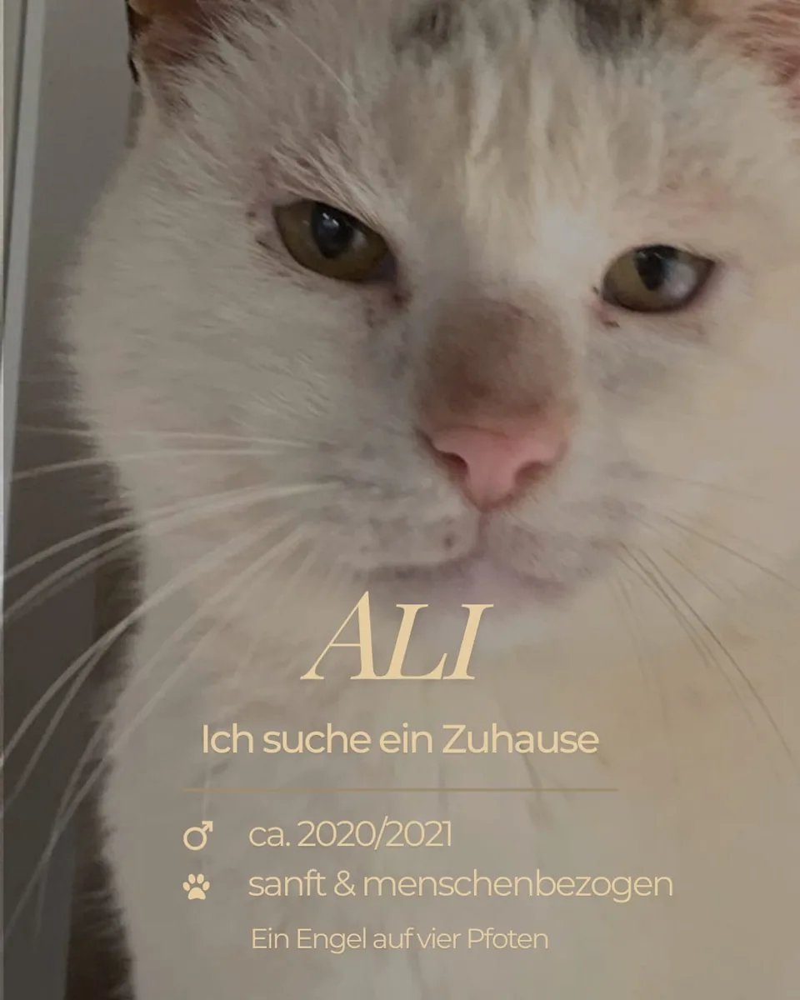

sucht Zuhause
Ali
männlich · geboren ca. 2020/2021 · Region Artemida, Griechenland
- sanft
- menschenbezogen
- friedlich
Ali sucht die Nähe von Menschen und lässt sich gerne auf den Arm nehmen. Streit geht er aus dem Weg – am liebsten hat er es ruhig.
Ali kennenlernen